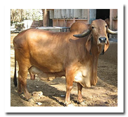
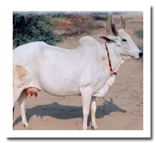
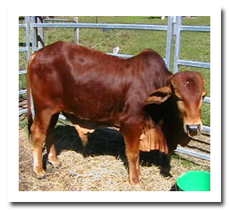
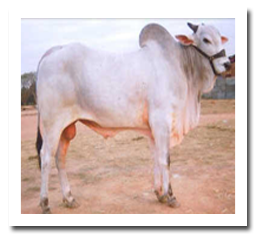
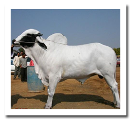
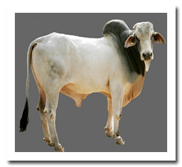
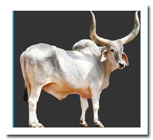
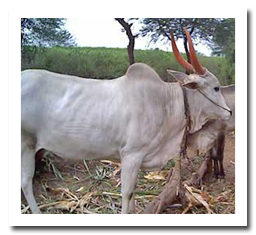

Your cows deserve the best care. We provide expert advice and services to keep your cows healthy and happy.
At CowCare, we are dedicated to providing top-notch health care and guidance to ensure your cows live long, healthy lives.
1.RED SINDHI:
The breed originated in the Sindh province of Pakistan and widely kept as milch cowin India, Pakistan, Bangladesh and Sri Lanka. They are heat and disease resistant. Colour: red- brown. Body weight : Males: 530 kg Females: 325 Kg. Height: Males: 132 cm Female:115 cm. Average milk yield: 12 litres per day.
2.GIR:
Mostly found in Gir forest of Gujarat, hence the name. They are also known as Desan, Gujarati etc. they are known for their resistance to stress conditions and resistance to several tropical diseases. The breed is also used to drag heavy loads.Age at first calving at 39 to 50 months inter calving period of 14 to 18 months. Colour: Red with shades varying from dark red to light. Weight: males : 544 kgs Females : 310 kgs Average milk yield: 12 liters / day.
3.HARIANA:
The breed originated from Rohtak, Hisar, Jind and Gurgaon districts of Haryana. The breed is mainly maintained for bullock as they are good workers. However the females can produce a fair amount of milk. Colour: white or light grey. Milk yield: 10 to 15 liters per day. Weight: males: 430 kg Females: 310 kg. Height: males: 132 to 155 cm Females: 127 to 140 cm.
4.SAHIWAL:
The breed originated in Punjab region along the India Pakistan border.It is heat resistant, tick resistant, and is noted for high resistance against parasites ( both internal and external ). It is kept for both milk and draught purpose. Colour: Brownish red to grayish red. Weight: 600kg Height: 114 to 127 cm Average milk yield: 7 to 10 liters per day.
5.ONGOLE::
The breed originated from Andhra Pradesh. India. It is known for its rapid growth rate, and resistance to heat and diseases. It has great demand as it is said to be resistant to F.M.D and Mad Cow Disease. It is a triple purpose breed and is reared for milk meat and draught. Colour: white. Weight: Male: 500kg Female:430 to 455 kg Height: 1.7 meters Average milk yield: 17 liters per day.
6.DEONI:
Breed originated from Marathwada region of Maharashtra and adjoining part of Karnataka and western Andhra Pradesh. Also known as Dongerpati or Dongari. Age at first calving ranges from 894 to 1540 days. Calving interval averages 447 days. Colour : Usually spotted black and white. Average milk yield: 636 to 1320 kgs per lactation. Weight: Male: 590 kg Female: 295 kg
7.THARPARKAR:
Originated in Tharparkar District in Sind province in Pakistan and also found in parts of India. It is a dual purpose breed known for its milking and draught potential. It is a cattle of medium to large build. Colour: white to grey. Weight: Males : 450 kgs females : 400 kgs. Average milk yield: 8 to 10 liters per day.
8.KANKREJ:
It is an Indian breed of cattle which originated in the region of Rann of Kutch in Gujarat and neighboring Rajasthan. It is also found in Sind province of Pakistan. It is also known as Waded or Waged. This breed has unique characteristics like resistance to tick fever, heat stress and tuberculosis. Colour : Varies from Silver grey to iron grey and steel black. Milk yield: 1738 kg per lactation Weight: Males : 590 kg. Females : 431 kg.
9.KRISHNA VALLEY:
Originated from the black cotton soil of the water shed of the river Krishna in Karnataka. The animals are large having a massive frame with tail almost reaching the ground. Bullocks of this breed are used for slow ploughing and valued for good working qualities. The females are fair milkers. Colour: Grey white with a darker shade on the front quarters and hind quarters. Weight: male: 550 kg Female: 325 kg Milk yield: 916 kgs per lactation period.
If you have any questions, feel free to get in touch!
Email: info@cowcare.com
AARUSHI JAIN - +91 8770478719